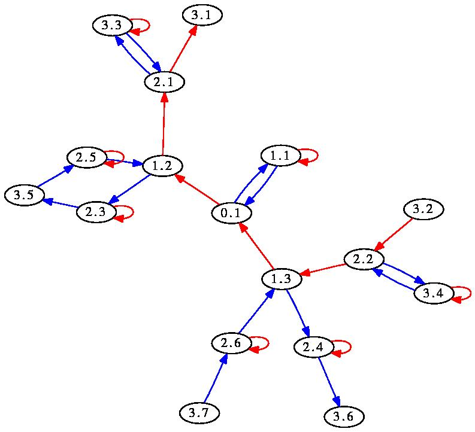

‣ TensorSum( objects, ... ) | ( function ) |
This function is similar in syntax to DirectProduct (???), and delegates to TensorSumOp; its meaning depends on context, see e.g. TensorSumOp (3.5-4).
‣ TensorProduct( objects, ... ) | ( function ) |
This function is similar in syntax to DirectProduct (???), and delegates to TensorProductOp; its meaning depends on context, see e.g. TensorProductOp (3.5-5).
‣ DirectSum( objects, ... ) | ( function ) |
This function is similar in syntax to DirectProduct (???), and delegates to DirectSumOp; its meaning depends on context, see e.g. DirectSumOp (3.5-6).
‣ PeriodicListsFamily | ( family ) |
‣ IsPeriodicList | ( filter ) |
The family, respectively filter, of PeriodicList (12.2-2)s.
‣ PeriodicList( preperiod[, period] ) | ( operation ) |
‣ PeriodicList( list, i ) | ( operation ) |
‣ PeriodicList( list, f ) | ( operation ) |
‣ CompressedPeriodicList( preperiod[, period] ) | ( operation ) |
‣ CompressedPeriodicList( list, i ) | ( operation ) |
‣ PrePeriod( list ) | ( operation ) |
‣ Period( list ) | ( operation ) |
These functions manipulate periodic lists, i.e. lists of infinite length such that elements follow a periodic order after some point.
The first command creates a periodic list, specified by its preperiod and period, which must both be lists. If the period is absent, this is actually a finite list.
The second command creates a periodic list by decreeing that the entries after the end of the list start again at position i.
The third command creates a list by applying function f to all elements of l.
The fourth and fifth command compress the newly created periodic list, see CompressPeriodicList (12.2-3).
The sixth and seventh commands return respectively the preperiod and period of a periodic list.
Most of the methods applied for lists have an obvious equivalent for periodic lists: List (???), Filtered (???), First (???), ForAll (???), ForAny (???), Number (???).
gap> l := PeriodicList([1],[2,3,4]); [ 1, / 2, 3, 4 ] gap> l[5]; 2 gap> Add(l,100,3); l; [ 1, 2, 100, / 3, 4, 2 ] gap> Remove(l,5); 4 gap> l; [ 1, 2, 100, 3, / 2, 3, 4 ] gap> PrePeriod(l); [ 1, 2, 100, 3 ] gap> Period(l); [ 2, 3, 4 ]
‣ CompressPeriodicList( l ) | ( operation ) |
This function compresses a periodic list, in replacing the period by a minimal period, and shortening the preperiod. No value is returned, but the list l is modified. It remains equal (under =) to the original list.
gap> l := PeriodicList([1],[2,3,4,2,3,4]); [ 1, / 2, 3, 4, 2, 3, 4 ] gap> Add(l,4,5); l; [ 1, 2, 3, 4, 4, / 2, 3, 4, 2, 3, 4 ] gap> CompressPeriodicList(l); gap> l; [ 1, 2, 3, 4, / 4, 2, 3 ]
‣ IsConfinal( l, m ) | ( operation ) |
Returns: true if l and m are eventually equal.
This function tests whether two lists are confinal, i.e. whether, after removal of the same suitable number of elements from both lists, they become equal.
gap> l := PeriodicList([1],[2,3,2,3]); [ 1, / 2, 3, 2, 3 ] gap> m := PeriodicList([0,1],[3,2]); [ 0, 1, / 3, 2 ] gap> IsConfinal(l,m); true
‣ ConfinalityClass( l ) | ( operation ) |
Returns: The strictly periodic list with same tail as l.
There exists a unique periodic list, with no preperiod, which is confinal (see IsConfinal (12.2-4)) to l. This strictly periodic list is returned by this command.
gap> l := PeriodicList([1],[2,3,2,3]); [ 1, / 2, 3, 2, 3 ] gap> ConfinalityClass(l); [/ 3, 2 ]
‣ LargestCommonPrefix( c ) | ( operation ) |
Returns: The longest list that is a prefix of all elements of c.
This command computes the longest (finite or periodic) list which is a prefix of all elements of c. The argument c is a collection of finite and periodic lists.
gap> LargestCommonPrefix([PeriodicList([1],[2,3,2,3]),[1,2,3,4]]); [ 1, 2, 3 ]
‣ WordGrowth( g, rec(options...) ) | ( function ) |
‣ WordGrowth( g: options... ) | ( function ) |
‣ OrbitGrowth( g, point[, limit] ) | ( function ) |
‣ Ball( g, radius ) | ( function ) |
‣ Sphere( g, radius ) | ( function ) |
Returns: The word growth of the semigroup g.
This function computes the first terms of growth series associated with the semigroup g. The argument g can actually be a group/monoid/semigroup, or a list representing that semigroup's generating set.
The behaviour of WordGrowth is controlled via options passed in the second argument, which is a record. They can be combined when reasonable, and are:
limit:=nto specify a limit radius;
sphere:=radiusto return the sphere of the specified radius, unless a radius was specified in limit, in which case the value is ignored;
spheres:=maxradiusto return the list of spheres of radius between 0 and the specified limit;
spheresizes:=maxradiusto return the list sizes of spheres of radius between 0 and the specified limit;
ball:=radiusto return the ball of the specified radius;
balls:=maxradiusto return the list of balls of radius between 0 and the specified limit;
ballsizes:=maxradiusto return the list sizes of balls of radius between 0 and the specified limit;
indet:=zto return the spheresizes, as a polynomial in z (or the first indeterminate if z is not a polynomial;
draw:=filenameto create a rendering of the Cayley graph of g. Edges are given colours according to the cyclic ordering "red", "blue", "green", "gray", "yellow", "cyan", "orange", "purple". If filename is a string, the graph is appended, in dot format, to that file. Otherwise, the output is converted to Postscript using the program neato from the graphviz package, and displayed in a separate X window using the program display or rsvg-view. This works on UNIX systems.
It is assumed, but not checked, that graphviz and display/rsvg-view are properly installed on the system. The option usesvg requests the use of rsvg-view; by default, display is used.
point:=pto compute the growth of the orbit of p under g, rather than the growth of g.
track:=trueto keep track of a word in the generators that gives the element. This affects the "ball", "balls", "sphere" and "spheres" commands, where the result returned is a 3-element list: the first entry is the original results; the second entry is a homomorphism from a free group/monoid/semigroup; and the third entry contains the words corresponding to the first entry via the homomorphism.
If the first argument is an integer n and not a record, the command is interpreted as WordGrowth(...,rec(spheresizes:=n)).
WordGrowth(...,rec(draw:=true)) may be abbreviated as Draw(...); WordGrowth(...,rec(ball:=n)) may be abbreviated as Ball(...,n); WordGrowth(...,rec(sphere:=n)) may be abbreviated as Sphere(...,n);
gap> WordGrowth(GrigorchukGroup,4); [ 1, 4, 6, 12, 17 ] gap> WordGrowth(GrigorchukGroup,rec(limit:=4,indet:=true)); 17*x_1^4+12*x_1^3+6*x_1^2+4*x_1+1 gap> WordGrowth(GrigorchukGroup,rec(limit:=1,spheres:=true)); [ [ <Mealy element on alphabet [ 1, 2 ] with 1 state, initial state 1> ], [ d, b, c, a ] ] gap> WordGrowth(GrigorchukGroup,rec(point:=[2,2,2])); [ 1, 1, 1, 1, 1, 1, 1, 1 ] gap> OrbitGrowth(GrigorchukGroup,[1,1,1]); [ 1, 2, 2, 1, 1, 1 ] gap> WordGrowth(GrigorchukGroup,rec(spheres:=4,point:=PeriodicList([],[2]))); [ [ [/ 2 ] ], [ [ 1, / 2 ] ], [ [ 1, 1, / 2 ] ], [ [ 2, 1, / 2 ] ], [ [ 2, 1, 1, / 2 ] ] ] gap> WordGrowth([(1,2),(2,3)],rec(spheres:=infinity,track:=true)); [ [ [ ], [ (2,3), (1,2) ], [ (), (1,2,3), (1,3,2) ], [ (1,3) ] ], MappingByFunction( <free semigroup on the generators [ s1, s2 ]>, <group>, function( w ) ... end ), [ [ ], [ s2, s1 ], [ s2^2, s2*s1, s1*s2 ], [ s2*s1*s2 ] ] ]
Note that the orbit growth of [/2] is constant 1, while that of [/1] is constant 2. The following code would find the point with maximal orbit growth of a semigroup acting on the integers (for example, constructed with PermGroup (7.2-1)):
MaximalOrbitGrowth := function(g)
local maxpt, growth, max;
maxpt := LargestMovedPoint(g);
growth := List([1..maxpt],n->WordGrowth(g:point:=n));
max := Maximum(growth);
return [max,Filtered([1..maxpt],n->growth[n]=max)];
end;
For example, the command Draw(BasilicaGroup,rec(point:=PeriodicList([],[2,1]),limit:=3)); produces (in a new window) the following picture: 
‣ ShortGroupRelations( g, n ) | ( operation ) |
‣ ShortMonoidRelations( g, n ) | ( operation ) |
Returns: A list of relations between words over g, of length at most n.
This function assumes that g is a list of monoid elements. it searches for products of at most n elements over g that are equal.
In its first form, it returns a list of words in a free group f of rank the length of g, that are trivial in g. The first argument may be a group, in which case its symmetric generating set is considered.
In its second form, it returns a list of pairs [l,r], where l and r are words in a free monoid f of rank the length of g, that are equal in g. The first argument may be a monoid, in which case its monoid generating set is considered.
This command does not construct all such pairs; rather, it returns a small set, in the hope that it may serve as a presentation for the monoid generated by g.
The first element of the list returned is actually not a relation: it is a homomorphism from f to [the group/monoid generated by] g.
gap> ShortGroupRelations(GrigorchukGroup,10); [ [ x1, x2, x3, x4 ] -> [ a, b, c, d ], x1^2, x2^2, x3^2, x4^2, x2*x3*x4, x4*x1*x4*x1*x4*x1*x4*x1, x3*x1*x3*x1*x3*x1*x3*x1*x3*x1*x3*x1*x3*x1*x3*x1 ] gap> ShortGroupRelations(GuptaSidkiGroup,9); [ [ x1, x2 ] -> [ x, gamma ], x1^3, x2^3, x2*x1^-1*x2*x1^-1*x2*x1^-1*x2*x1^-1*x2*x1^-1*x2*x1^-1* x2*x1^-1*x2*x1^-1*x2*x1^-1, x1^-1*x2^-1*x1^-1*x2^-1*x1^-1*x2^-1* x1^-1*x2^-1*x1^-1*x2^-1*x1^-1*x2^-1*x1^-1*x2^-1*x1^-1*x2^-1*x1^-1*x2^-1 ]
‣ ShortGroupWordInSet( g, s, n ) | ( operation ) |
‣ ShortMonoidWordInSet( g, s, n ) | ( operation ) |
‣ ShortSemigroupWordInSet( g, s, n ) | ( operation ) |
Returns: Words over g that express elements of s.
This command produces words in the free group/monoid/semigroup generated by g's generators that express elements of the set s. Elements of length at most AbsoluteValue(n) are searched; if n is non-negative then at most one element is returned. The value n=infinity is allowed.
The second argument may be either a list, a predicate (i.e. a function returning true or false) or an element.
The function returns a list of words in the free group/monoid/semigroup; the first entry of the list is a homomorphism from the free group/monoid/semigroup to g.
gap> l := ShortMonoidWordInSet(Group((1,2),(2,3),(3,4)), [(1,2,3,4),(4,3,2,1)],-3); [ MappingByFunction( <free monoid on the generators [ m1, m2, m3 ]>, Group( [ (1,2), (2,3), (3,4) ]), function( w ) ... end ), m3*m2*m1, m1*m2*m3 ] gap> f := Remove(l,1);; gap> List(l,x->x^f); [ (1,2,3,4), (1,4,3,2) ] gap> ShortMonoidWordInSet(GrigorchukGroup, [Comm(GrigorchukGroup.1,GrigorchukGroup.2)],4); [ MappingByFunction( <free monoid on the generators [ m1, m2, m3, m4 ]>, <self-similar monoid over [ 1 .. 2 ] with 4 generators>, function( w ) ... end ), m1*m2*m1*m2 ]
‣ SurfaceBraidFpGroup( n, g, p ) | ( function ) |
‣ PureSurfaceBraidFpGroup( n, g, p ) | ( function ) |
Returns: The [pure] surface braid group on n strands.
This function creates a finitely presented group, isomorphic to the [pure] braid group on n strands of the surface of genus g, with p punctures. In particular, SurfaceBraidFpGroup(n,0,1) is the usual braid group (on the disc).
The presentation comes from [Bel04]. The first 2g generators are the standard a_i,b_i surface generators; the next n-1 are the standard s_i braid generators; and the last are the extra z generators.
The pure surface braid group is the kernel of the natural map from the surface braid group to the symmetric group on n points, defined by sending a_i,b_i,z to the identity and s_i to the transposition (i,i+1).
‣ CharneyBraidFpGroup( n ) | ( function ) |
Returns: The braid group on n strands.
This function creates a finitely presented group, isomorphic to the braid group on n strands (on the disc). It is isomorphic to SurfaceBraidFpGroup(n,0,1), but has a different presentation, due to Charney ([Cha95]), with one generator per non-trivial permutation of n points.
‣ ArtinRepresentation( n ) | ( function ) |
Returns: The braid group's representation on FreeGroup(n).
This function creates a Artin's representatin, a homomorphism from the braid group on n strands (on the disc) into the automorphism group of a free group of rank n.
‣ TRANS_FAMILY | ( family ) |
‣ IsTrans | ( filter ) |
The family and filter of transformations of the FR's implementation of transformations on the positive integers, see Trans (12.6-2).
‣ Trans( list, ... ) | ( function ) |
‣ TransList( list, ... ) | ( function ) |
‣ TransNC( list ) | ( function ) |
This function creates a new transformation, in the family TRANS_FAMILY. These objects behave quite as usual transformations (see Transformation (???)); the differences are that these transformations do not have a bounded set on which they operate; they are all part of one family, and act on PosInt. The other difference is that, when they are invertible, these transformations are simply permutations.
If one argument is passed, it is a list of images, as in PermList (???). If two arguments are passed and both are lists, they are the source and range, as in PermListList (???). Finally, if two arguments are passed and the second is a function, the first argument is treated as the source and the range is computed with this function.
Transformations are printed, and converted to strings, as "<x,y,...>", where the x,y,... denote the images of 1,2,... under the transformation; the shortest possible list is printed.
gap> Trans(); <> gap> Trans([1,,2]); <1,2,2> gap> 3^last; 2 gap> Trans([1,3,3]); <1,3> gap> Trans([10,11],[11,12]); <1,2,3,4,5,6,7,8,9,11,12> gap> Trans([10,11],x->x^2); <1,2,3,4,5,6,7,8,9,100,121>
‣ AsTrans( perm ) | ( operation ) |
Returns: An FR transformation equivalent to perm.
‣ Cycle( trans, point ) | ( operation ) |
Returns: The cycle of integers that point eventually reaches under trans.
‣ Cycles( trans, domain[, act] ) | ( operation ) |
Returns: The cycles that domain eventually reaches under trans.
‣ FullTransMonoid( n ) | ( operation ) |
Returns: The monoid of transformations of [1..n] (if n is an integer) or of n (if n is a collection).
‣ ImageSetOfTrans( trans, coll ) | ( operation ) |
Returns: The images of coll under trans.
‣ KernelOfTrans( trans ) | ( operation ) |
Returns: The non-trivial equivalence classes of integers identified under trans.
‣ ListTrans( trans ) | ( operation ) |
Returns: A list of images describing trans.
‣ OneTrans | ( global variable ) |
The identity FR transformation.
‣ PreImagesOfTrans( trans, i ) | ( operation ) |
Returns: The preimages of i under trans.
‣ RandomTrans( n ) | ( operation ) |
Returns: A random FR transformation on the fist n positive integers.
‣ RankOfTrans( trans[, list] ) | ( function ) |
Returns: The (normalized) rank of the FR transformation trans.
If list is present, this computes the size of the image of list under trans. Otherwise, this computes the limit, as n->∞, of RankOfTrans(trans,[1..n])-n.
gap> RankOfTrans(Trans([1,1])); gap> RankOfTrans(Trans([1,1]),[1..10]); 9 -1 gap> RankOfTrans(Trans()); 0
‣ RestrictedTrans( trans, coll ) | ( operation ) |
Returns: The FR transformation that agrees with trans on coll, and is the identity elsewhere.
‣ IsPMComplex | ( filter ) |
‣ PMCOMPLEX_FAMILY | ( family ) |
‣ PMCOMPLEX_PSEUDOFIELD | ( global variable ) |
‣ PMCOMPLEX | ( global variable ) |
A "poor man's" implementation of complex numbers, based on the underlying 64-bit floating-point numbers in GAP.
Strictly speaking, complex numbers do not form a field in GAP, because associativity etc. do not hold. Still, a field is defined, PMCOMPLEX_FIELD, making it possible to construct an indeterminate and rational functions, to be passed to FR's routines.
These complex numbers can be made the default floating-point numbers via SetFloats(PMCOMPLEX);. They may then be entered as standard floating-point numbers, with the suffix _z.
gap> z := Indeterminate(PMCOMPLEX_FIELD,"z"); z gap> (z+1/2)^5/(z-1/2); (z^5+2.5*z^4+2.5*z^3+1.25*z^2+0.3125*z+0.03125)/(z+(-0.5)) gap> NewFloat(IsPMComplex,1,2); 1+2i gap> last^2; -3+4i gap> RealPart(last); -3 gap> Norm(last2); 25 gap> NewFloat(IsPMComplex,"1+2*I"); 1+2i gap> RootsFloat(z^2-5); [ 2.23607, -2.23607 ] gap> RootsFloat(ListWithIdenticalEntries(80,1.0_z)); [ 0.987688+0.156434i, 0.996917+0.0784591i, 0.996917-0.0784591i, 0.987688-0.156434i, 0.760406+0.649448i, 0.92388+0.382683i, 0.951057-0.309017i, 0.97237+0.233445i, 0.809017+0.587785i, 0.522499+0.85264i, 0.649448+0.760406i, 0.891007+0.45399i, 0.587785+0.809017i, 0.707107+0.707107i, 0.951057+0.309017i, 0.233445+0.97237i, 0.45399+0.891007i, 0.309017+0.951057i, 0.382683+0.92388i, 0.85264+0.522499i, -0.59719-0.608203i, -0.867574-0.11552i, -0.186972-0.990223i, -0.999006+0.318176i, -0.739308+0.0272973i, -0.432752-0.7287i, -0.672709+0.537561i, 0.156434+0.987688i, 0.295424-0.953359i, 0.588289-0.808509i, 0.455128-0.893999i, 0.0951213-1.01063i, 0.229628-0.939435i, -0.216054-0.95336i, -0.914152+0.49378i, 0.524052-0.853005i, 0.97237-0.233445i, -0.233486+0.972416i, 0.379514-0.92918i, 3.09131e-07+1.i, 0.182752-0.984684i, 0.891007-0.45399i, -0.0892207-1.01443i, 0.852641-0.522499i, 0.00247318-1.02032i, 0.92388-0.382683i, -0.585832+0.81608i, 0.809018-0.587792i, -0.656055+0.770506i, 0.760385-0.649467i, -0.452862+0.889692i, -0.0784562+0.996918i, 0.707015-0.707079i, 0.0784591+0.996917i, -0.15643+0.987703i, -0.307608-0.969002i, 0.649377-0.760134i, -0.382904+0.92328i, -0.857704+0.573345i, -0.403754-0.946275i, -0.827986-0.648221i, -0.990655-0.396897i, -0.929824-0.488558i, -0.671579-0.790133i, -0.886052-0.560249i, -1.05047-0.0873829i, -0.496236-0.900246i, -0.726008+0.713809i, -1.02514+0.223541i, -1.01722-0.277614i, -0.585809-0.852796i, -0.518635+0.85364i, -1.04842+0.0255453i, -0.752485-0.724528i, -0.309225+0.951018i, -0.9612+0.409487i, -0.793651+0.646744i, -1.01735-0.194111i, -1.04161+0.124175i ] gap> AsSortedList(List(last,AbsoluteValue)); [ 0.739812, 0.847513, 0.852377, 0.861109, 0.875231, 0.967092, 0.977534, 0.998083, 0.998317, 0.998841, 0.99953, 0.999747, 0.999886, 0.999916, 0.999996, 1., 1., 1., 1., 1., 1., 1., 1., 1., 1., 1., 1., 1., 1., 1., 1., 1., 1., 1., 1., 1., 1., 1., 1., 1., 1., 1., 1., 1.00001, 1.00001, 1.00003, 1.00005, 1.00112, 1.0015, 1.00318, 1.0037, 1.00458, 1.00772, 1.01197, 1.01509, 1.01665, 1.01814, 1.01834, 1.02033, 1.0238, 1.02796, 1.02881, 1.03169, 1.03462, 1.0357, 1.03698, 1.03899, 1.04459, 1.04479, 1.04832, 1.04845, 1.04873, 1.04899, 1.04923, 1.05036, 1.05155, 1.0541, 1.05442, 1.0672 ]
‣ IsP1Point | ( filter ) |
‣ P1PointsFamily | ( family ) |
‣ P1Point( complex ) | ( function ) |
‣ P1Point( real, imag ) | ( function ) |
‣ P1Point( string ) | ( function ) |
P1 points are complex numbers or infinity; fast methods are implemented to compute with them, and to apply rational maps to them.
The first filter recognizes these objects. Next, the family they belong to. The next methods create a new P1 point.
‣ CleanedP1Point( p, prec ) | ( function ) |
Returns: p, rounded towards 0/1/infinity/reals at precision prec.
‣ P1infinity | ( global variable ) |
‣ P1one | ( global variable ) |
‣ P1zero | ( global variable ) |
The south, north and 'east' poles of the Riemann sphere.
‣ P1Antipode( p ) | ( function ) |
Returns: The antipode of p on the Riemann sphere.
‣ P1Barycentre( points, ... ) | ( function ) |
Returns: The barycentre of its arguments (which can also be a list of P1 points).
‣ P1Circumcentre( p, q, r ) | ( function ) |
Returns: The centre of the smallest disk containing p,q,r.
‣ P1Distance( p, q ) | ( function ) |
Returns: The spherical distance from p to q.
‣ P1Midpoint( p, q ) | ( function ) |
Returns: The point between p to q (undefined if they are antipodes of each other).
‣ P1Sphere( v ) | ( function ) |
Returns: The P1 point corresponding to v in R^3.
‣ SphereP1( p ) | ( function ) |
Returns: The coordinates in R^3 of p.
‣ SphereP1Y( p ) | ( function ) |
Returns: The Y coordinate in R^3 of p.
‣ P1XRatio( p, q, r, s ) | ( function ) |
Returns: The cross ratio of p, q, r, s.
‣ IsP1Map | ( filter ) |
‣ P1MapsFamily | ( family ) |
P1 maps are stored more efficiently than rational functions, but are otherwise equivalent.
The first filter recognizes these objects. Next, the family they belong to.
‣ MoebiusMap( [sourcelist, ]destlist ) | ( function ) |
‣ MoebiusMap( p, q, r, s, t, u ) | ( function ) |
‣ MoebiusMap( p, q, r ) | ( function ) |
‣ MoebiusMap( p, q ) | ( function ) |
These methods create a new P1 map. In the first case, this is the Möbius transformation sending p,q,r to P,Q,R respectively; in the second case, the map sending p,q,r to 0,1,P1infinity respectively; in the third case, the map sending p,q to 0,P1infinity respectively, of the form (z-p)/(z-q).
‣ P1z | ( global variable ) |
The identity Möbius transformation.
‣ CleanedP1Map( map, prec ) | ( operation ) |
Returns: map, with coefficients rounded using prec.
‣ CompositionP1Map( map1, ... ) | ( operation ) |
Returns: The composition of the maps passed as arguments, in the functional (map1 last) order.
‣ InverseP1Map( map ) | ( operation ) |
Returns: The functional inverse of the Möbius transformation map.
‣ ConjugatedP1Map( map, mobius ) | ( operation ) |
Returns: The map CompositionP1Map(InverseP1Map(mobius),map,mobius).
‣ CoefficientsOfP1Map( map ) | ( operation ) |
Returns: Coefficients of numerator and denominator of map, lowest degree first.
‣ P1MapByCoefficients( numer, denom ) | ( operation ) |
Returns: The P1 map with numerator coefficients numer and denominator denom, lowest degree first.
‣ P1Path( p, q ) | ( operation ) |
Returns: The P1 map sending 0 to p and 1 to q.
‣ DegreeOfP1Map( map ) | ( operation ) |
Returns: The degree of map.
‣ P1Image( map, p1point ) | ( operation ) |
Returns: The image of p1point under map.
‣ P1PreImages( map, p1point ) | ( operation ) |
Returns: The preimages of p1point under map.
‣ P1MapCriticalPoints( map ) | ( operation ) |
Returns: The critical points of map.
‣ P1MapRational( rat ) | ( operation ) |
Returns: The P1 map given by the rational function rat.
‣ RationalP1Map( map ) | ( operation ) |
‣ RationalP1Map( indeterminate, map ) | ( operation ) |
Returns: The rational function given by P1 map map.
‣ P1MapSL2( mat ) | ( operation ) |
Returns: The Möbius P1 map given by the 2x2 matrix mat.
‣ SL2P1Map( map ) | ( operation ) |
Returns: The matrix of the Möbius P1 map map.
‣ SetP1Points( record[, prec] ) | ( function ) |
Installs a default implementation for P1 points. Fundamentally, a P1 point is a complex number or infinity, with a few extra methods. The argument record is the record describing the floating-point implementation.
Currently, one implementation (the default) is based on pairs of IEEE754 floateans. It is fast, but is limited to 53 bits of precision. It is loaded via SetP1Points(PMCOMPLEX);.
Another implementation, in case the package Float is available, is based on MPC complex numbers. It offers unlimited precision, but is much slower. It is loaded via SetP1Points(MPC); or SetP1Points(MPC,prec);.
‣ DirichletSeries( ) | ( operation ) |
‣ DirichletSeries( maxdeg ) | ( operation ) |
‣ DirichletSeries( indices, coeffs[, maxdeg] ) | ( operation ) |
‣ DirichletSeries( series, maxdeg ) | ( operation ) |
Creates a new Dirichlet series, namely, a formal power series of the form f(s)=∑_nge1 a(n) n^-s. Such series have a maximal degree, which may be infinity, and may be added or multiplied as polynomials.
‣ DegreeDirichletSeries( f ) | ( attribute ) |
Returns: The maximal degree of a non-zero coefficient of f.
‣ SpreadDirichletSeries( f, n ) | ( attribute ) |
Returns: The series f(ns).
‣ ShiftDirichletSeries( s, n ) | ( attribute ) |
Returns: The series n^-sf(s).
‣ ShrunkDirichletSeries( f ) | ( attribute ) |
Returns: The series f, with maximal precision set to its maximal degree.
‣ ZetaSeriesOfGroup( G ) | ( attribute ) |
Returns: The series \sum_{\chi\in\widehat G}(\dim G)^{-s}.
‣ ValueOfDirichletSeries( f, s ) | ( attribute ) |
Returns: The evaluation of f at s. Synonym for Value.
‣ IsProjectiveRepresentation( rep ) | ( property ) |
‣ IsLinearRepresentation( rep ) | ( property ) |
A projective representation is a mapping to matrices, that is multiplicative up to scalars. This property is set by the following functions that create projective representations.
The second property describes those projective representations that are in fact homomorphisms.
‣ ProjectiveRepresentationByFunction( group, matrixgroup, function ) | ( operation ) |
Returns: A projective representation of group.
‣ LinearRepresentationByImages( group, matrixgroup, src, dst ) | ( operation ) |
Returns: A linear representation of group.
‣ DegreeOfProjectiveRepresentation( rep ) | ( operation ) |
Returns: The dimension of the matrices in the image of rep.
‣ ProjectiveExtension( rep, group ) | ( operation ) |
Returns: A projective representation of group whose restriction to Source(rep) (which is a subgroup of group) is rep.
‣ ProjectiveQuotient( rep, hom ) | ( operation ) |
Returns: A projective representation of Image(hom) that comes from rep.
‣ StringByInt( n[, b] ) | ( function ) |
Returns: A string representing n in base b.
This function converts a positive integer to string. It accepts an optional second argument, which is a base in which to print n. By default, b is 2.
‣ PositionInTower( t, x ) | ( function ) |
Returns: The largest index such that t[i] contains x.
This function assumes t is a descending tower of domains, such as that constructed by LowerCentralSeries. It returns the largest integer i such that t[i] contains x; in case the tower ends precisely with x, the value infinity is returned.
x can be an element or a subdomain of t[1].
‣ RenameSubobjects( obj, refobj ) | ( function ) |
This function traverses obj if it is a list or a record, and, when it finds an element which has no name, but is equal (in the sense of =) to an element of refobj, assigns it the name of that element.
gap> trivial := Group(());; SetName(trivial,"trivial"); gap> a := List([1..10],i->Group(Random(SymmetricGroup(3)))); [ Group([ (2,3) ]), Group([ (2,3) ]), Group([ (1,3) ]), Group([ (1,3) ]), Group([ (1,3,2) ]), Group([ (1,3,2) ]), Group([ (1,2) ]), Group(()), Group([ (2,3) ]), Group([ (1,3,2) ]) ] gap> RenameSubobjects(a,[trivial]); a; [ Group([ (2,3) ]), Group([ (2,3) ]), Group([ (1,3) ]), Group([ (1,3) ]), Group([ (1,3,2) ]), Group([ (1,3,2) ]), Group([ (1,2) ]), trivial, Group([ (2,3) ]), Group([ (1,3,2) ]) ]
‣ CoefficientsInAbelianExtension( x, b, G ) | ( function ) |
Returns: The coefficients in b of the element x, modulo G.
If b is a list of group elements b_1,...,b_k, and H=⟨ G,b_1,...,b_k⟩ contains G as a normal subgroup, and H/G is abelian and x∈ H, then this function computes exponents e_1,...,e_k such that ∏ b_i^e_iG=xG.
‣ MagmaEndomorphismByImagesNC( f, im ) | ( function ) |
Returns: An endomorphism of f.
This function constructs an endomorphism of the group,monoid or semigroup f specified by sending generator number i to the ith entry in im. It is a shortcut for a call to GroupHomomorphismByImagesNC or MagmaHomomorphismByFunctionNC(...,MappedWord(...)).
‣ MagmaHomomorphismByImagesNC( f, g, im ) | ( function ) |
Returns: An homomorphism from f to g.
This function constructs a homomorphism of the group,monoid or semigroup f specified by sending generator number i to the ith entry in im. It is a shortcut for a call to GroupHomomorphismByImagesNC or MagmaHomomorphismByFunctionNC(...,MappedWord(...)).
‣ Draw( p ) | ( function ) |
‣ HeightOfPoset( p ) | ( function ) |
Returns: The length of a maximal chain in the poset.
‣ IsFIFO | ( filter ) |
‣ NewFIFO( [l] ) | ( operation ) |
‣ Add( f, i ) | ( operation ) |
‣ Append( f, l ) | ( operation ) |
These functions create and extend FIFOs, i.e. first-in first-out data structures.
The first command creates a FIFO, with an optional list initializing it.
The second and third commands add an element, or append a list, to the FIFO.
Elements are removed via NextIterator(f), and the FIFO is tested for emptyness via IsDoneIterator(f). Thus, a typical use is the following code, which tests in breadth-first manner that all numbers in [1..1000] have a successor which is prime:
gap> f := NewFIFO([1..10000]); <iterator> gap> for i in f do if not IsPrime(i) then Add(f,i+1); fi; od;
‣ ProductIdeal( a, b ) | ( function ) |
‣ ProductBOIIdeal( a, b ) | ( function ) |
Returns: the product of the ideals a and b.
The first command computes the product of the left ideal a and the right ideal b. If they are not appropriately-sided ideals, the command first attempts to convert them.
The second command assumes that the ring of these ideals has a basis made of invertible elements. It is then much easier to compute the product.
‣ DimensionSeries( a[, n] ) | ( function ) |
Returns: A nested list of ideals in the algebra-with-one a.
This command computes the powers of the augmentation ideal of a, and returns their list. The list stops when the list becomes stationary.
The optional second argument gives a limit to the number of terms to put in the series.
gap> a := ThinnedAlgebraWithOne(GF(2),GrigorchukGroup); <self-similar algebra-with-one on alphabet GF(2)^2 with 4 generators> gap> q := MatrixQuotient(a,3); <algebra-with-one of dimension 22 over GF(2)> gap> l := DimensionSeries(q); [ <two-sided ideal in <algebra-with-one of dimension 22 over GF(2)>, (5 generators)>, <two-sided ideal in <algebra-with-one of dimension 22 over GF(2)>, (dimension 21)>, <two-sided ideal in <algebra-with-one of dimension 22 over GF(2)>, (dimension 18)>, <two-sided ideal in <algebra-with-one of dimension 22 over GF(2)>, (dimension 14)>, <two-sided ideal in <algebra-with-one of dimension 22 over GF(2)>, (dimension 10)>, <two-sided ideal in <algebra-with-one of dimension 22 over GF(2)>, (dimension 6)>, <two-sided ideal in <algebra-with-one of dimension 22 over GF(2)>, (dimension 3)>, <two-sided ideal in <algebra-with-one of dimension 22 over GF(2)>, (dimension 1)>, <algebra of dimension 0 over GF(2)> ]
‣ AlgebraHomomorphismByFunction( A, B, f ) | ( operation ) |
‣ AlgebraWithOneHomomorphismByFunction( A, B, f ) | ( operation ) |
Returns: A homomorphism from the algebra A to the algebra B.
These functions construct an algebra homomorphism from a one-argument function. They do not check that the function actually defines a homomorphism.
gap> A := MatrixAlgebra(Rationals,2); ( Rationals^[ 2, 2 ] ) gap> e1 := AlgebraHomomorphismByFunction(Rationals,A,f->[[f,0],[0,0]]); MappingByFunction( Rationals, ( Rationals^[ 2, 2 ] ), function( f ) ... end ) gap> 11^e1; [ [ 11, 0 ], [ 0, 0 ] ]
‣ IsFpLieAlgebra | ( filter ) |
The category of Lie algebras coming from a finitely presented group. They appear as the JenningsLieAlgebra (???) of a finitely presented group.
If G is an infinite, finitely presented group, then the original implementation of JenningsLieAlgebra (???) does not return. On the other hand, the implementation in FR constructs a graded object, for which the graded components are computed on-demand; see JenningsLieAlgebra (12.11-13).
‣ JenningsLieAlgebra( ring, fpgroup ) | ( operation ) |
Returns: The Jennings Lie algebra of fpgroup.
This method does not compute the Jennings Lie algebra per se; it merely constructs a placeholder to contain the result.
gap> f := FreeGroup(4); <free group on the generators [ f1, f2, f3, f4 ]> gap> surfacegp := f/[Comm(f.1,f.2)*Comm(f.3,f.4)]; <fp group of size infinity on the generators [ f1, f2, f3, f4 ]> gap> j := JenningsLieAlgebra(Rationals,surfgp); <FP Lie algebra over Rationals> gap> List([1..4],Grading(j).hom_components); [ <vector space over Rationals, with 4 generators>, <vector space over Rationals, with 5 generators>, <vector space over Rationals, with 16 generators>, <vector space over Rationals, with 45 generators> ] gap> B := Basis(Grading(j).hom_components(1)); gap> B[1]*B[2]+B[3]*B[4]; <zero Lie element>
‣ SolutionMatModN( mat, vec, N ) | ( operation ) |
Solve the linear system sol*mat=vec modulo N. The arguments are assumed to be an integer matrix and vector. Either returns an integer solution, or fail if no such solution exists.
‣ SolutionMatMod1( mat, vec ) | ( operation ) |
Solve the linear system sol*mat=vec in Q/Z. The arguments are assumed to be rational matrices. Assuming there are finitely many solutions, returns them all.
‣ CyclotomicByArgument( q ) | ( operation ) |
Returns: The cyclotomic field element equal to exp(2π i q).
‣ ArgumentOfCyclotomic( z ) | ( operation ) |
Returns: The rational q such that exp(2π i q)=z.
‣ InfoFR | ( info class ) |
This is an Info class for the package FR. The command SetInfoLevel(InfoFR,1); switches on the printing of some information during the computations of certain FR functions; in particular all automatic conversions between FR machines and Mealy machines.
The command SetInfoLevel(InfoFR,2); requests a little more information, and in particular prints intermediate results in potentially long calculations such as NucleusOfFRSemigroup (7.2-19).
The command SetInfoLevel(InfoFR,3); ensures that FR will print information every few seconds or so. This is useful to gain confidence that the program is not stuck due to a programming bug by the author of FR.
‣ SEARCH@ | ( global variable ) |
This variable controls the search mechanism in FR groups. It is a record with in particular entries radius and depth.
radius limits the search in FR groups to balls of that radius in the generating set. For example, the command x in G will initiate a search in G to attempt to express x as a reasonably short word in the generators of G.
depth limits the level of the tree on which quotients of FR groups should be considered. Again for the command x in G, deeper and deeper quotients will be considered, in the hope of finding a quotient of G to which x does not belong.
A primitive mechanism is implemented to search alternatively for a quotient disproving x in G and a word proving x in G.
When the limits are reached and the search was unsuccessful, an interactive Error() is raised, to let the user increase their values.
Specific limits can be passed to any command via the options FRdepth and FRradius, as for example in Size(G:FRdepth:=3,FRradius:=5).
generated by GAPDoc2HTML